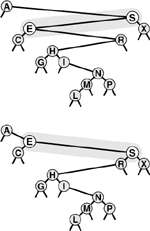
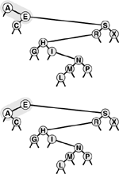
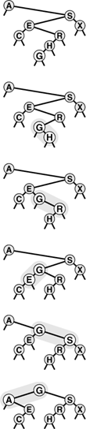
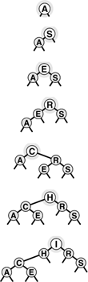
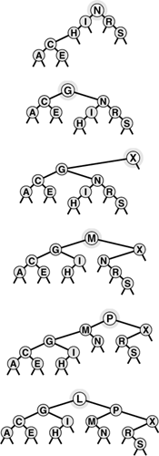

C++ Programming Robert Sedgewick - Princeton University Addison Wesley Professional Algorithms in C++, Parts 1–4: Fundamentals, Data Structure, Sorting, Searching, Third Edition C++ Programming Robert Sedgewick - Princeton University Addison Wesley Professional Algorithms in C++, Parts 1–4: Fundamentals, Data Structure, Sorting, Searching, Third Edition
12.8. Insertion at the Root in BSTs
In the standard implementation of BSTs, every new node inserted goes somewhere at the bottom of the tree, replacing some external node. This state of affairs is not an absolute requirement; it is just an artifact of the natural recursive insertion algorithm. In this section, we consider an alternative insertion method, where we insist that each new item be inserted at the root, so recently inserted nodes are at the top of the tree.
Trees built in this way have some interesting properties, but our main reason for considering this method is that it plays a crucial role in two of the improved BST algorithms that we consider in Chapter 13.
Suppose that the key of the item to be inserted is larger than the key at the root. We might start to make a new tree by putting the new item into a new root node, with the old root as the left subtree and the right subtree of the old root as the right subtree. However, the right subtree may contain some smaller keys, so we need to do more work to complete the insertion. Similarly, if the key of the item to be inserted is smaller than the key at the root and is larger than all the keys in the left subtree of the root, we can again make a new tree with the new item at the root, but more work is needed if the left subtree contains some larger keys. To move all nodes with smaller keys to the left subtree and all nodes with larger keys to the right subtree seems a complicated transformation in general, since the nodes that have to be moved can be scattered along the search path for the node to be inserted.
Fortunately, there is a simple recursive solution to this problem, which is based on rotation, a fundamental transformation on trees. Essentially, a rotation allows us to interchange the role of the root and one of the root's children in a tree while still preserving the BST ordering among the keys in the nodes. A right rotation involves the root and the left child (see Figure 12.12). The rotation puts the root on the right, essentially reversing the direction of the left link of the root: Before the rotation, it points from the root to the left child; after the rotation, it points from the old left child (the new root) to the old root (the right child of the new root). The tricky part, which makes the rotation work, is to copy the right link of the left child to be the left link of the old root. This link points to all the nodes with keys between the two nodes involved in the rotation. Finally, the link to the old root has to be changed to point to the new root. The description of a left rotation is identical to the description just given, with "right" and "left" interchanged everywhere (see Figure 12.13).
This diagram shows the result (bottom) of a right rotation at S in an example BST (top). The node containing S moves down in the tree, becoming the right child of its former left child. We accomplish the rotation by getting the link to the new root E from the left link of S, setting the left link of S by copying the right link of E, setting the right link of E to S, and setting the link to S from A to point to E instead. The effect of the rotation is to move E and its left subtree up one level, and to move S and its right subtree down one level. The rest of the tree is not affected at all.

This diagram shows the result (bottom) of a left rotation at A in an example BST (top). The node containing A moves down in the tree, becoming the left child of its former right child. We accomplish the rotation by getting the link to the new root E from the right link of A, setting the right link of A by copying the left link of E, setting the left link of E to A, and setting the link to A (the head link of the tree) to point to E instead.

A rotation is a local change, involving only three links and two nodes, that allows us to move nodes around in trees without changing the global ordering properties that make BSTs useful for search (see Program 12.12). We use rotations to move specific nodes through a tree and to keep the trees from becoming unbalanced. In Section 12.9 we implement remove, join, and other ADT operations with rotations; in Chapter 13 we use them to help us build trees that afford near-optimal performance.
Program 12.12. Rotations in BSTs|
These twin routines perform the rotation operation on a BST. A right rotation makes the old root the right subtree of the new root (the old left subtree of the root); a left rotation makes the old root the left subtree of the new root (the old right subtree of the root). For implementations where a count field is maintained in the nodes (for example, to support select, as we will see in Section 14.9), we need also to exchange the count fields in the nodes involved in the rotation (see Exercise 12.75).
void rotR(link& h)
{ link x = h->l; h->l = x->r; x->r = h; h = x; }
void rotL(link& h)
{ link x = h->r; h->r = x->l; x->l = h; h = x; }
|
The rotation operations provide a straightforward recursive implementation of root insertion: Recursively insert the new item into the appropriate subtree (leaving it, when the recursive operation is complete, at the root of that tree), then rotate to make it the root of the main tree. Figure 12.14 depicts an example, and Program 12.13 is a direct implementation of this method. This program is a persuasive example of the power of recursion—any reader not so persuaded is encouraged to try Exercise 12.76.
This sequence depicts the result of inserting G into the BST at the top, with (recursive) rotation after insertion to bring the newly inserted node G to the root. The process is equivalent to inserting G, then performing a sequence of rotations to bring it to the root.

Figures 12.15 and 12.16 show how we construct a BST by inserting a sequence of keys into an initially empty tree, using the root insertion method. If the key sequence is random, a BST built in this way has precisely the same stochastic properties as does a BST built by the standard method. For example, Properties 12.6 and 12.7 hold for BSTs built by root insertion.
This sequence depicts the result of inserting the keys A S E R C H I into an initially empty BST, using the root insertion method. Each new node is inserted at the root, with links along its search path changed to make a proper BST.

This sequence depicts insertion of the keys N G X M P L to the BST started in Figure 12.15.

In practice, an advantage of the root insertion method is that recently inserted keys are near the top. The cost for search hits on recently inserted keys therefore is likely to be lower than that for the standard method. This property is significant, because many applications have precisely this kind of dynamic mix among their searchand insert operations. A symbol table might contain a great many items, but a large fraction of the searches might refer to the items that were most recently inserted. For example, in a commercial transaction processing system, active transactions could remain near the top and be processed quickly, without access to old transactions being lost. The root insertion method gives the data structure this and similar properties automatically.
Program 12.13. Root insertion in BSTs|
With the rotation functions in Program 12.12, a recursive function that inserts a new node at the root of a BST is immediate: Insert the new item at the root in the appropriate subtree, then perform the appropriate rotation to bring it to the root of the main tree.
private:
void insertT(link& h, Item x)
{ if (h == 0) { h = new node(x); return; }
if (x.key() < h->item.key())
{ insertT(h->l, x); rotR(h); }
else { insertT(h->r, x); rotL(h); }
}
public:
void insert(Item item)
{ insertT(head, item); }
|
If we also change the search function to bring the node found to the root when we have a search hit, then we have a self-organizing search method (see Exercise 12.28) that keeps frequently accessed nodes near the top of the tree. In Chapter 13, we shall see a systematic application of this idea to provide a symbol-table implementation that has guaranteed fast performance characteristics.
As is true of several other methods that we have mentioned in this chapter, it is difficult to make precise statements about the performance of the root insertion method versus the standard insertion method for practical applications, because the performance depends on the mixture of symbol-table operations in a way that is difficult to characterize analytically. Our inability to analyze the algorithm should not necessarily dissuade us from using root insertion when we know that the preponderance of searches are for recently inserted data, but we always seek precise performance guarantees—our main focus in Chapter 13 is methods for constructing BSTs such that these guarantees can be provided.
Exercises |  12.73 Draw the BST that results when you insert items with the keys E A S Y Q U E S T I O N into an initially empty tree, using the root insertion method. 12.73 Draw the BST that results when you insert items with the keys E A S Y Q U E S T I O N into an initially empty tree, using the root insertion method.
| | 12.74 Give a sequence of 10 keys (use the letters A through J) that, when inserted into an initially empty tree via the root insertion method, requires a maximal number of comparisons to build the tree. Give the number of comparisons used. | | 12.75 Add the code necessary to have Program 12.12 properly modify the count fields that need to be changed after the rotation. | |  12.76 Implement a nonrecursive BST root insertion function (see Program 12.13). 12.76 Implement a nonrecursive BST root insertion function (see Program 12.13).
| | 12.77 Run empirical studies to compute the average and standard deviation of the number of comparisons used for search hits and for search misses in a BST built by inserting N random keys into an initially empty tree, then performing a sequence of N random searches for the N/10 most recently inserted keys, for N = 103, 104, 105, and 106. Run your experiment both for the standard insertion method and for the root insertion method; then, compare the results. |
|